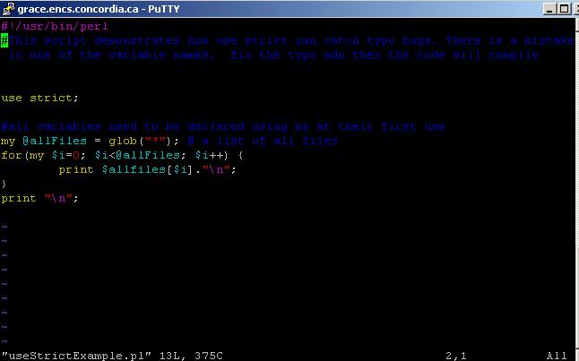
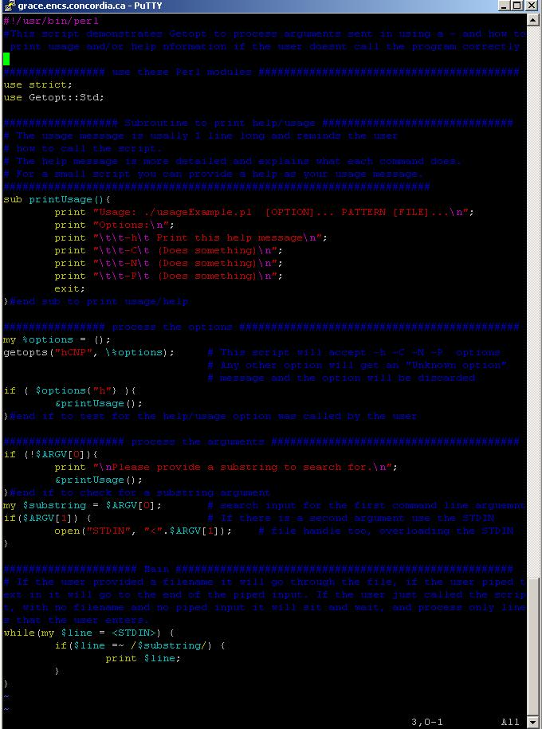

TA
Cesine
v_cook encs concordia ca
|
SOEN 229
SYSTEMS SOFTWARE
Wednesday, 14:45--16:25, SB
H-929
|
Lab 1 - January 14
Outline:
- How to open a file, edit a file, and save a file using Vim
- How to make a file executable using permissions
- Linux command line tips and tricks
- How to program in Perl
- How to login to Concordia from home
1.1 Announcements
1.2 What is Perl?
- What is the difference between scripting and programming?
"Perl is nicknamed "the Swiss Army chainsaw of programming languages" due to its flexibility and adaptability."
- Why use Perl?
"The language is intended to be practical (easy to use, efficient, complete) rather than beautiful (tiny, elegant, minimal)."
"Perl has also been called "The Duct Tape of the Internet"."
Perl resources are available everywhere! In order to get an understanding of why Perl is special and different you need to understand it in context, the Wikipedia article gives some background about the language, and some basic introduction to Perl commands.
1.3 Creating and Editing a Perl file using Vim
For more information look for some Vim documentation
- Open a terminal, your prompt will end with > or $
- Open a .pl file using vim
> vim MyFirstScript.pl
- Go into INSERT mode: Type i
- Type a hello world Perl code
#! /usr/bin/perl
# My first perl program; Hello World
print “Hello world!\n”; # This line will generate output on the screen.
- Save the file and go back to the command prompt
Go into command mode: Push Esc
Write and quit: Type :wq
- Make the file executable using permissions
> chmod 700 MyFirstScript.pl
- Execute (run) the file
> ./MyFirstScript.pl
1.4 Linux Tips and Tricks
For information and ideas for linux you can search YouTube
- You can save time at the command line:
Push the up arrow to use a previous command
Push tab to autocomplete a file name
- Switch between windows quickly without useing your mouse:
Hold down alt and push tab once and a menu will appear of all your open windows, push tab to cycle through your windows.
- If you run your perl script at the command line and nothing happens, or it goes into an infinite loop you can kill it. To kill (terminate) an unresponsive program push Ctl+c.
1.4 How to program in Perl
You are now ready to follow Richard le Guen's
Perl Tutorials (#2 and #3)
1.5 How to login from home (Windows)
- Download Putty: click to download putty
- Open Putty
- In the Putty Configuration window, in the box for Host Name (or IP address)
Type login.encs.concordia.ca
Click on Open
- Type your encs username and password, then you will be logged into a linux machine on campus and you can do the same things you did in the terminal window in the lab
If you like to reverse engineer here are the end scripts you should have after you finish Richard's 2 and 3 tutorials. perl script samples
Lab 2 - January 21
2.1 Use regular expressions to strip HTML tags and extract information
Last week in Richard's Tutorial 3 we learned how to either pass a filename to a perl script, or to use the pipe with a perl script. Today you will combine what you learned last week with some common uses of regular expressions to create an HTML stripper for the PHPbbb CMS (Content Management System). This CMS is the most common implmentation of webforums. After you finish, your perl script should be able to extract Author and Content info from most webforums.
2.2 Review last weeks tutorial
Review Richar'ds Tutorial 3
or Use a finished version of Tutorial 3's result
2.3 Get the HTML input
Save the html of the page which we will be processing into a directory where you will write your perl script.
HTML input
2.4 Get the txt output
You will make a perl script which takes the HTML code and creates this output.
2.5 Design your algorhithm
Compare the HTML and the txt files, what kind of logic do you need? What kind of research do you need to do?
Hint: You can practice differnt regular expression's in Kate, using Kate's Replace command (CTL+R).
For information about regular expressions and how to use them you can refer to Richard's Tutorial 3, wikipedia or google.
2.6 Show me your final script and your output
Before you go today you should show me your final script and you should be able to explain to me why you made the regular expressions you did and why you designed your algorithm the way that you did.
Lab 3 - January 28
3.1 Review previous perl scripts
Review previous perl scripts.
3.2 Create a word counter in Perl
Here is a simplifed version of this week's script, a short perl script that counts words in a string.
Click here for a video tutorial
The script illustrates the use of subroutines, hashes, foreach loops on arrays and the split command.
Or you can open it locally by typing: (recommended)
totem /www/home/v/v_cook/teaching/perl-wordcount.ogg &
After you have viewed the video try the tutorial.
Lab 4 - February 4
4.1 Individual Help and Explanation of Linux OS and Perl
4.2 Work individually on Programming Assignment 1
So far we have been re-creating Unix command lines such as cat and grep, the assignment asks you to re-create MS-DOS command lines. For bonus points you can also design your own Comand Line Interpreter (Shell) to interpret your commands just like Bash $ or TSCH >.
http://leguen.ca/soen229/assignments/view/assignment-1
Lab 5 - February 11
5.1 Work on Programming Assignment 1
Lab 6 - February 18
6.1 Tutorial on Command Line Options and the lstat Function
Tutorial on command line options and the lstat function
6.2 Work on Programming Assignment 2
Assignment 2
Assignment 2 builds on assignment 1. It asks for a more advanced Command Line Iterpreter as well as more scripts.
Lab 7 - March 4
Individual feedback and comments on Assignment 1
If you missed section come and see me to recieve feedback about your coding and your grade.
A sample assignment 1 is posted here
Explaination of Assignment 2
One of the best ways to learn what an Operating System is, is to build one. We don't have time to build an entire opperating system. What we are doing in our tutorial is stepping back in time ~50 years, to a time when computer users interacted with the computer using text only, before the GUI (graphical user interface). Users can still interact with the computer using text only, at the command line interface. The commandline is very popular among Unix/Linux users, and not very popular among Windows users (the dos command prompt).
So far we have looked at the kinds of tools that programmers need to program:
- ls(Unix)/DIR(DOS): quickly print the file names in the directory
- cat(Unix)/TYPE(DOS): quickly print the contents of a file to the screen so we can check it without editing it
- grep(Unix)/FIND(DOS): quickly print only the relevent lines of a file
Now that you have coded these simple scripts (using Perl because it is designed to do these things), we want you to see what it takes for the system to actually execute (call) your scripts. So we want you to build a program that "interpretes" what the user types at the command line, i.e. a command line interpreter.
Assignment 2 has two goals, the first is for you to demonstrate knowledge of systems and the second is to demonstrate knowledge of Perl. Assignment 3 will also be using Perl, and Perl will be useful if you do system administrator tasks or if you do natural language processing or artificial intelence.
To achieve these two goals, the marking scheme for Assignment 2 is provided at the bottom of the assignment page. Please focus on it while you are doing your assignment, you will be graded on whether or not you fulfull the marking scheme. 70% of marks go toward coding and 30% of the marks go toward demonstrating that you have learned something. The best way to demonstrate learning something about system software, is to first develop an understanding of what a Command Line Interpretor is, and to incorporate the things you have learned about processes and filestructure in Dr. Fancott's lecture into your comments.
My suggestions:
- Read the Wikipedia article on Command-line Interpreters
- Create your algorithm before you start coding
- Take in a user input
- Call the script the user wants
- Return the results the user wants to the screen
- Repeat until the user wants to exit
- Be resourceful, it will help you in your future classes more than specified knowledge about x function (look up functions and code samples on the tutorial websites, on Google, in the Perldocs, talk to eachother and friends)
How to require variables to be declared (easier debuging): use strict
Look at the useStrictExample.pl script. Many bugs in Perl come from the fact that you don't have to declare variables before using them. This means that you can have a typo where you meant to have a variable that you used before but Perl won't complain (no compile error). The "use strict;" will make Perl act like other languages; you will have to declare your variables with a "my" in front of them.

How to write a user friendly program: usage
If your script allows options or it needs arguments its a good idea to tell the user how to use your script. You can do this by providing help and/or usage information. Look at the usageExample.pl script for more explaination.

Hashes
How consumer processes can process output before producer processes are finished: piping
Piping works like a water pipe. Water (or data) starts to flow into one end of the pipe, and comes out the other end of the pipe before the water stops flowing at the front of the pipe. Piping improves your data throughput. To test piping try "cat type.pl | grep while"
if this works, then change grep for your find.pl for example "cat type.pl | ./find.pl while"
How to do pass by reference (pointers) in Perl
Lab 8 - March 11
Individual help on Assignment 2
Please be sure that your assignment meets the Marking requirements on the bottom of the Assignment 2 page
Overview of Final Projcect
This is your final programming assignment. You can find a marking scheme and a tutorial here.
You can find sample files here
You will be making a mini-server software. The component of the server that you will be making is circled in red below

Lab 9 - March 18
Individual comments on Assignment 2
Work on tutorials for Final Project
Work on the tutorials for March http://leguen.ca/soen229/tutorials
Work on Final Projet
http://leguen.ca/soen229/assignments/view/programming%20project
Lab 10 - March 25
Work on tutorials for Final Project
Lab 11 - April 1
Work on tutorials for Final Project
How to write a .cgi script
Writing a .cgi script is like any other perl script except:
- It has a .cgi extension, instead of .pl
- You have to have print "Content-type: text/html\n\n"; as the first print statement
For more information see this tutorial on writing a cgi script.